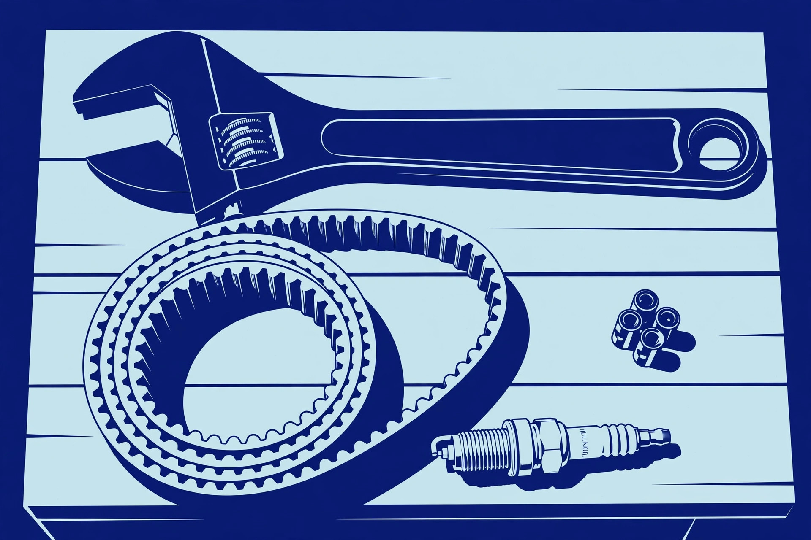

The first-snowfall checklist gets your machine into the season. This guide keeps it there. Mid-winter breakdowns are rarely bad luck — they're almost always the end of a chain that started weeks earlier: a belt that was already glazing, snow that packed into the housing every single storm, fuel that sat too long. Break the chain with habits that take minutes.
After every use: the five-minute routine
This is the highest-value maintenance there is, and it takes less time than warming your hands.
- Clear the packed snow. Snow packed into the auger housing, chute, and around the belts melts, refreezes, and locks things solid. With the engine off, brush or knock it out before you put the machine away. Pay special attention to the chute — a frozen chute that won't rotate is tomorrow's problem arriving early.
- Let it dry, then store it dry. Bring the machine into a dry spot and let meltwater drip off before it freezes in place. A machine stored wet freezes its controls, linkages, and cables into position.
- Wipe down exposed metal. A quick pass over the auger housing and chute with a dry rag slows the rust that eats machines over years. It takes thirty seconds.
- Check the fuel level for next time. Top up from your approved container now, so the next storm doesn't start with a fuel run. Never refuel a hot engine — let it cool first, and refuel outdoors, never in the garage.
Belts: listen for the warning signs
Belts are the most common mid-season failure on gas machines. The warning signs are unmistakable once you know them: the auger slows or stops under load while the engine keeps roaring, you smell hot rubber, or you hear squealing when the auger engages. That means the belt is slipping — and a slipping belt will snap at the worst possible moment, usually mid-storm.
Check belt tension and condition monthly during the season, or sooner if you notice the symptoms. Look for cracking, fraying, glazing (a shiny, hardened surface), and check the adjustment per your manual — many machines have a tension adjustment that buys a worn belt some extra life, but a belt that looks tired should be replaced on a calm weekend, not nursed through February. Keep a spare belt on hand; it's cheap and it's the part most likely to strand you.
Shear pins: check them like fuses
Treat shear pins like fuses — inspect them regularly, and keep spares with the machine. After any storm where the auger hit something (you'll usually hear it), check them. And never, ever replace a sheared pin with a regular bolt or a harder pin "so it doesn't break again." The pin is supposed to break. Its job is to sacrifice itself so the gearbox doesn't have to. A hardened substitute turns a two-minute, two-dollar repair into a gearbox rebuild.
Lubrication: the forgotten zerks
Your machine has grease fittings (zerks) on the auger shaft and other pivot points, and your manual tells you how often to hit them with a grease gun. Most owners never do — and then wonder why the auger shaft seizes or the chute control stiffens mid-season. A shot of the specified grease at the manual's interval takes minutes. While you're there, a light spray of silicone lubricant on the chute interior and the discharge area helps wet snow slide through instead of packing and clogging.
Mid-season oil and plug check
If you're a heavy user — long driveway, many storms — check the oil level monthly and change it mid-season if it looks dirty. Pull the spark plug and glance at it; heavy carbon buildup mid-season can point to fuel or running issues worth addressing before they become a no-start. These are two-minute checks that catch problems while they're still small.
Keep batteries charged between storms and store them indoors above freezing — cold storage saps capacity and shortens battery life. Wipe the battery contacts clean, check that cooling vents on the machine aren't packed with snow, and rotate batteries if you have more than one so they wear evenly.
Between storms: how you store it matters
A snowblower that lives under a tarp at the end of the driveway ages in dog years. Covered, dry storage — a garage or shed — is the single best longevity decision after the after-use routine. If the machine sits for more than a couple of weeks between storms, either run it dry per your manual's storage guidance or make sure the fuel is stabilized, and close the fuel shutoff valve if it has one. Cover the machine to keep dust and meltwater off it, but let it breathe — a sealed cover over a wet machine is a rust incubator.
Know when it's a shop job
Basic maintenance is DIY territory. Some things aren't: gearbox problems (grinding, leaking gear oil), engine issues beyond plug and fuel (low compression, persistent smoking, surging that cleaning doesn't fix), and anything involving the internal drive system that your manual doesn't cover. A good small-engine shop is worth its weight in February — find yours before you need it, because when the storm hits, so does everyone else's breakdown.
And through all of it, the safety rules don't take a day off: engine off and spark plug wire disconnected before your hands go anywhere near the auger or chute, every time. Read safe operation habits if you haven't — the maintenance only matters if the mechanic stays intact.